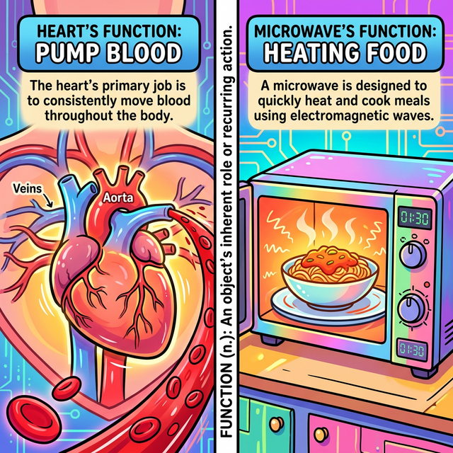
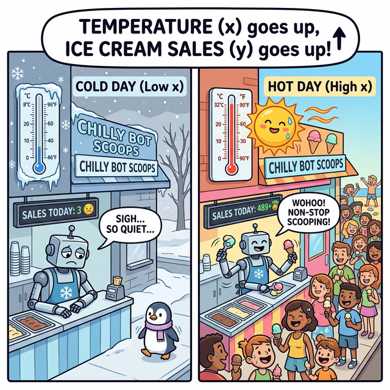
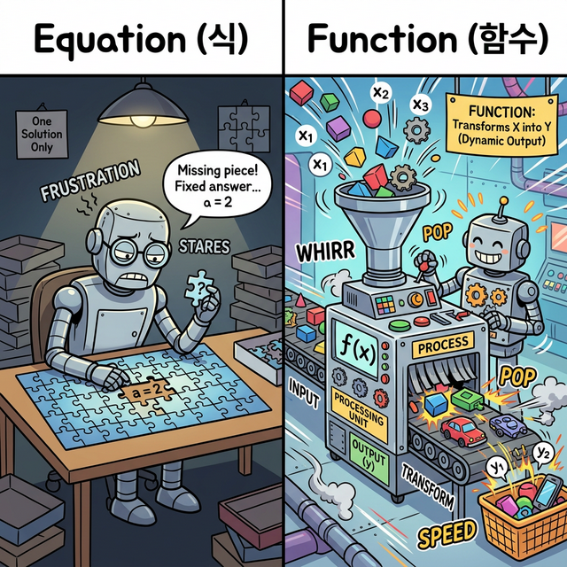
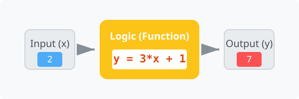

3.3.1 함수의 어원과 수학적 기원
학습목표
본 장에서는 프로그래밍의 가장 거대한 뼈대인 ‘함수(Function)’라는 단어가 도대체 어디서 왔는지 그 어원적 의미를 파헤칩니다. 영어 사전 속 ‘동작, 역할’이라는 뜻이 어떻게 수학의 $y = ax + b$ 대응 관계로 발전했고, 마침내 현대 프로그래밍의 ‘독립적이고 일관적인 논리 처리 블랙박스’로 진화했는지 그 근원적 철학을 완벽하게 이해합니다.
1. 어원적 접근: Function은 본래 “동작, 역할”이다
코딩을 처음 배우는 학생들이 가장 낯설어하는 단어 1위가 바로 ‘함수’입니다. 한자로 상자 함(函)에 셈 수(數)를 써서 “상자 속의 숫자 마법”이라는 뜻으로 번역되었기 조차 어렵습니다.
하지만 영어권 사람들에게 “Function(펑션)”은 아주 흔한 일상생활 단어입니다. 영어 사전을 찾아보면 그 뜻은 다음과 같습니다.
- 기능, 작용
- 역할, 목적
- (제대로) 작동하다, 역할하다

(웹툰 비유: 심장이 쿵쾅거리는 그림 위에Heart's Function : Pumping Blood 라고 적혀있고, 전자레인지 그림 위에 Microwave's Function : Heating Food 라고 적혀있습니다. 각 사물이 가진 고유하고 반복적인 ‘역할(역할/기능)’이 바로 Function의 핵심 본질임을 보여줍니다.)
이처럼 Function의 본질은 무언가 복잡한 수식이 아니라, “외부에서 자극(Input)이 주어졌을 때, 자기가 맡은 고유의 임무(동작)를 묵묵히 수행하고 결과를 내어주는 것”입니다. 심장의 펑션이 피를 뿜는 것이듯, 프로그래밍에서의 펑션(함수)은 ‘특정한 계산이나 동작을 수행하도록 묶어놓은 코드 덩어리’를 의미합니다.
2. 수학적 기원: y = ax + b 와 ‘대응(Mapping)’의 탄생
그렇다면 이 일상용어였던 Function이 어떻게 오늘날 컴퓨터 논리의 핵심으로 자리 잡았을까요? 그 중간 다리 역할을 한 것이 바로 수학(Mathematics)입니다.
과거 수학자들은 자연현상을 관찰하다가 한 가지 놀라운 사실을 발견합니다.
“어? 기온이 올라갈수록 아이스크림 판매량이 늘어나네? 원인(온도)이 변하면 결과(판매량)도 규칙적으로 변하는구나!”

(웹툰 비유: 왼쪽은 온도가 낮아 파리 날리는 아이스크림 가게, 오른쪽은 온도가 폭염일 때 로봇 점원이 땀을 뻘뻘 흘리며 아이스크림을 불티나게 파는 모습입니다. 원인이 변함에 따라 결과가 확연히 달라지는 ‘대응 관계’를 유머러스하게 보여줍니다.)여기서 수학의 위대한 발명품인 변수(Variable) 개념이 등장합니다. 수학자들은 원인이 되는 기온을 $x$(독립변수), 그에 따라 종속되어 결과가 되는 아이스크림 판매량을 $y$(종속변수)로 두고, 이 둘 사이의 규칙적인 변화율(대응 관계)을 $y = ax + b$ 같은 간결한 수식으로 묶어버렸습니다.
3. 식(Equation)과 함수(Function)의 결정적 차이: 미지수의 역동성
수학에서 식(예: $2a + 3 = 7$)과 함수(예: $y = 2x + 3$)는 겉보기엔 비슷하지만 근본적인 철학이 다릅니다.

(웹툰 비유: 왼쪽 그림의식(Equation) 로봇은 책상에 가만히 앉아 직소 퍼즐에서 오직 1개의 정답 피스(a=2)를 찾으려 골머리를 앓는 정적인 모습입니다. 반면 오른쪽 그림의 함수(Function) 로봇은 거대한 기계를 조작하며 컨베이어 벨트에 $x$(원인 재료)를 계속 들이붓고 반대편에서 끝없이 전혀 다른 파란색의 $y$(새로운 제품)를 신나게 찍어내는 역동적인 공장장 모습입니다!)
- 식(Equation): 정지되어 있는 퀴즈입니다. 좌변과 우변이 같아지게 만드는 특정한 미지수
a의 정답(이 경우a = 2) 하나만을 찾아내는 것이 목적입니다. 즉, 죽어있는 고정된 숫자들의 수수께끼입니다. - 함수(Function): 살아 움직이는 공장입니다. $x$라는 변수(Variable) 공간에 어떤 값을 주입(Input)하든지 간에, 정해진 규칙(대응)에 따라 실시간으로 계산하여 새로운 $y$값(Output)을 뱉어냅니다.
이처럼 정적인 식을 넘어, 미지수를 이용해 끊임없이 동적인 ‘대응(Mapping)’ 변화를 만들어낸다는 점에서 함수는 거대한 생명력을 가지게 되었고, 이 개념이 컴퓨터 프로그래밍 세계로 넘어와 입력 데이터에 대응하는 출력 데이터를 찍어내는 “코드 공장”의 토대가 된 것입니다.
“대응(Correspondence)”과 “집합(Set)”의 콜라보레이션
수식 구조 안에서 $x$에 숫자 1을 넣으면 $y$가 3이 되고, $x$에 2를 넣으면 $y$가 5가 됩니다. 이렇게 원인인 $x$ 값 하나에 결과인 $y$ 값이 짝을 지어 결정되는 관계를 수학에서는 대응(Mapping, Correspondence)이라고 불렀습니다.
이 대응 관계를 성립시키려면, 먼저 원인이 될 수 있는 숫자들을 모아놓은 그룹(출발지)과 결과가 될 수 있는 숫자들을 모아놓은 그룹(도착지)이 필요합니다. 수학에서는 이처럼 명확한 조건으로 묶인 값들의 모임을 집합(Set)이라고 부릅니다.
- 함수의 시작점이 되는 원인 $x$ 값들의 집합을 정의역(Domain)이라 부릅니다.
- 함수의 도착점이 되는 결과 $y$ 값들의 집합을 공역(Codomain)이라 부릅니다.
결국, 함수란 그저 둥둥 떠다니는 수식이 아니라 “정의역이라는 집합의 원소(Data) 하나를 공역이라는 다른 집합의 원소(Data)로 정확히 연결해 주는 규칙적인 다리”인 셈입니다.

(다이어그램: 정의역($X$ 집합, 원인)의 데이터들이 $y = 2x + 1$ 이라는 마법의 파이프를 통과하자마자 공역($Y$ 집합, 결과)으로 확정되어 튀어나오는 매핑 과정. “1개의 입력은 정확히 1개의 결과만 보장한다”는 인과율의 화살표가 선명하게 빛납니다.)수학자들은 이처럼 “입력이 주어지면 내부의 규칙(수식)을 거쳐 결과를 일관되게 뱉어내는 기계적인 대응 시스템”의 모습이 마치 사물이 제 기능을 하는 모습과 똑같다고 생각하여 이를 수학적 ‘함수(Function)’라고 명명하게 됩니다.
4. 프로그래밍으로의 진화: 일관적인 ‘논리 처리 동작’
수학의 함수가 단순히 “숫자를 넣어 숫자를 뽑아내는 식”이었다면, 컴퓨터 프로그래밍 세계로 넘어오면서 이 개념은 무한대로 확장됩니다.
“숫자를 넘어서 모든 종류의 데이터를 대응시킨다”
컴퓨터 세계에서의 함수는 숫자뿐만 아니라, 문자열, 사용자 클릭, 파일, 이미지 등 모든 형태의 데이터를 원인($x$, Input)으로 받을 수 있습니다. 그리고 그 안에서 단순한 사칙연산이 아닌, 무수히 많은 if문과 for 루프가 섞인 일관적이고 비대한 논리 처리 동작을 수행한 뒤 새로운 결과($y$, Output)를 만들어 냅니다.
# 일관적인 논리 처리를 담당하는 현대 프로그래밍의 함수(Function)
def translate_word(korean_word):
# 단순한 수식이 아니라, 조건 분기와 매핑이라는 거대한 논리 덩어리입니다.
# 하지만 "입력을 받아 역할을 수행하고 결과를 반환한다"는 철학은 똑같습니다.
dictionary = {"사과": "Apple", "바나나": "Banana"}
if korean_word in dictionary:
return dictionary[korean_word] # 1:1 확정 대응 처리!
else:
return "Unknown"
결론적으로, 현대 코딩에서 함수를 짠다는 것은 수학에서 $y = f(x)$ 라는 공식을 만드는 행위의 연장선입니다. 우리는 함수라는 껍데기(def) 안에 1. 어원적 의미인 ‘독립적인 고유의 동작/임무’와 2. 수학적 의미인 ‘입력과 출력의 철저한 인과율(대응)’ 철학을 모두 담아 거대한 소프트웨어를 조립하는 기어봉을 만드는 것입니다.
🎧 Vibe Coding
🗣️ 학생 프롬프트 (AI에게 이렇게 명령해 보세요): “수학의 1차 함수 방정식 $y = 3x + 5$ 를 파이썬 함수
def linear_func(x):로 그대로 똑같이 표현해서 짜줘. 그리고 그 밑에 for 루프를 돌려서 x 에 1부터 5까지 집어넣었을 때 y 값이 어떻게 일관성 있게(대응되어) 매핑되어 출력되는지 콘솔에서 확인하는 코드도 같이 줘.”
코딩 영단어 학습 📝
- Function: 기능, 동작, 목적, 함수. (어떤 것이 마땅히 수행해야 할 고유의 역할. 이 개념 하나가 수학과 컴퓨터 구조 전체를 관통하는 알파이자 오메가입니다.)
- Variable: 변수. (변할 수 있는 값. 온도($x$)나 아이스크림 판매량($y$)처럼 세상의 불확실성을 담아두는 빈 상자입니다.)
- Correspondence / Mapping: 대응, 매핑. (이쪽 집단의 원소 하나가 저쪽 집단의 원소 하나와 확고하고 운명적으로 짝지어지는 논리적 연결선입니다.)
- Set: 집합. (명확한 기준을 가지고 모인 객체나 데이터들의 묶음입니다.)
- Domain / Codomain: 정의역 / 공역. (함수라는 다리를 건너기 전 출발지 집합(원인)이 정의역, 다리를 건너 도착할 수 있는 잠재적 목적지 집합(결과)이 공역입니다.)